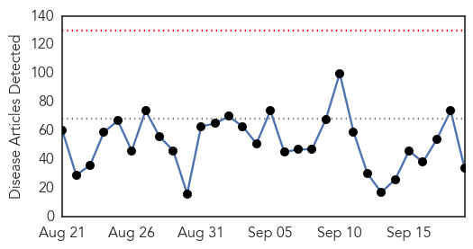
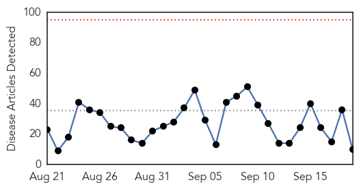
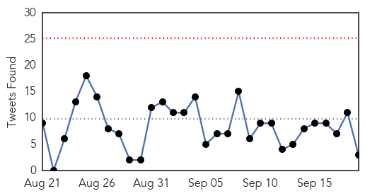

Unknown
30-Day Web Trend
0 alerts, 0 warnings

30-Day Twitter Trend
3 alerts, 0 warnings

Article Locations

Article Confidences

Top Articles:
- 0.977
- Malaria deaths down 60%: WHO
- 0.970
- Time for flu vaccine, updated after misery of last winter
- 0.957
- Gastro outbreak following Tropical Storm Erika
- 0.954
- Saudi Minister Says MERS Outbreak is Ebbing in Advance of the Hajj
- 0.945
- Gonorrhea Strain Resistant To Azithromycin Drug Spreading
- 0.923
- Food poisoning cause still a mystery
- 0.892
- Devastated by Earthquake, Nepal’s Fragile Water Supply Is in Danger
- 0.880
- Arizona woman is third victim of widespread salmonella outbreak
- 0.871
- Drug resistant gonorrhoea outbreak triggers national alert
- 0.869
- Arizona woman is third victim of widespread salmonella outbreak
- 0.863
- First cases of dog rabies reported in Malaysia
- 0.838
- Lancaster Farming
- 0.822
- Pima County woman who reportedly ate tainted cucumbers dies - azfamily.com 3TV
- 0.812
- Texas Health Rockwall, Children’s Health partner to offer pediatric emergency care in Rockwall County
- 0.787
- City hospitals take ‘no-antibiotic’ call to check resistance
- 0.766
- Science confirms successful strategy to protect threatened steelhead from virus
- 0.756
- Pope Francis embarks on 10-day trip to Cuba and US
- 0.752
- Warning after new strain of gonorrhoea proves resistant to drugs
- 0.749
- USDA Introduces Controversial Measures Against Bird Flu
- 0.748
- Benin president signals return to civilian rule in Burkina Faso
- 0.748
- Ethiopian movie gets a boost from French film industry
- 0.732
- USDA says heat stress can be used to kill poultry in bird flu outbreak
- 0.729
- Kerry urges Moscow to help negotiate Assad exit
- 0.654
- Health D-G: Seek immediate treatment for dog-bites - Nation
- 0.647
- World Rabies Day in Harford offers annual pet vaccination clinic
- 0.638
- UPDATE 1-U.S. may use heat to kill poultry if bird flu strikes again
- 0.625
- Kedah Health Department confirms woman bitten by pet dog with rabies
- 0.607
- South Sudan: First there was war, now fire - South Sudan
- 0.604
- Patients at Trinity Medical Center quarantined with scabies
- 0.595
- Millions of children's lives saved as malaria deaths plunge -UN
- 0.575
- Somaliland:More than 240,000 people in the Country Face Starvation-Aid Agencies -
- 0.562
- `60% drop in malaria deaths since 2000′
- 0.533
- State News
- 0.513
- Algae blooms detected in Owasco Lake, Lake Como
Top Tweets:
- 0.782
- RT: Uno queriendo madurar y convertirse en un adulto responsable y Warner pasando un maratón de los thundercats asà no se pu…
- 0.759
- RT: Todo procede de un libro y todo termina en un libro.
- 0.696
- RT: Otro fin de semana sin salir y me hacen un cuadro en el Vaticano.
- 0.609
- RT: NoMeGusta Las personas que se sienten victimas de la vida... vayan a trabajar en una novela pendejos..
- 0.599
- https://t.co/ruMhCetG64 ... Merecerá la pena vivir en él. Sexo en vez de guerra.
- 0.573
- RT: -Pasaste todas las materias de este semestre con 10! -Si, pero con un millón de toneladas de orgullo!!!😋
- 0.557
- ¿Alguien me puede ayudar con un sitio para quedarme de hoy para mañana en San Juan? Puede ser en un sofá o un piso con sábanas (o sin ellas)
Ebola
30-Day Web Trend
0 alerts, 0 warnings

30-Day Twitter Trend
0 alerts, 0 warnings

Article Locations

Article Confidences

Top Articles:
- 0.994
- Enhanced Airport Entry Screening To End for Travelers from Liberia to the United States
- 0.992
- Doctors Without Borders Has Mixed Feelings About Award For Ebola Work
- 0.991
- US to stop special health screenings of travelers from Liberia
- 0.990
- Enhanced airport screening to end for travelers from Liberia to US
- 0.980
- 10 critical mistakes in last year's Ebola outbreak
- 0.865
- Africa investigates back on Al Jazeera
- 0.844
- Clinton Initiative Donates US$5.9m Aid To Liberia, Sierra Leone
- 0.619
- Abraham Keita Expresses Concern On NOCAL’s Bankruptcy, Lauds Int’l Community For The Eradication Of EVD In Liberia
- 0.538
- Nurses union: RI lacking Ebola protocol, equipment
- 0.501
- UBA sponsors Ebola Movie: ‘93 Days’
Top Tweets:
- 0.951
- UBA sponsors Ebola Movie: '93 Days' - Naija247news http://t.co/BW7p7MFQI8 ebola EVD
- 0.913
- After Ebola, Africans shun herbal medicines - USA TODAY http://t.co/LjTm9BSTSy ebola EVD
- 0.841
- Response plan created in event Ebola comes to Trinity - The Trinitonian http://t.co/OhF0wBDLjR ebola EVD
- 0.703
- Aldershot Army medics praised for work during Ebola crisis - Eagle Radio http://t.co/hdp2BzxYNP ebola EVD
- 0.700
- In Sierra Leone, Giving the Stigma of Ebola a Good, Swift Kick http://t.co/O96hJKAuBm
- 0.626
- News reports on Ebola outbreak correspond with surveillance data http://t.co/O767CrPJJ2
- 0.514
- RT: From SARS to Ebola – 10 years of disease prevention and control at ECDC: http://t.co/7KMpNOhjoF